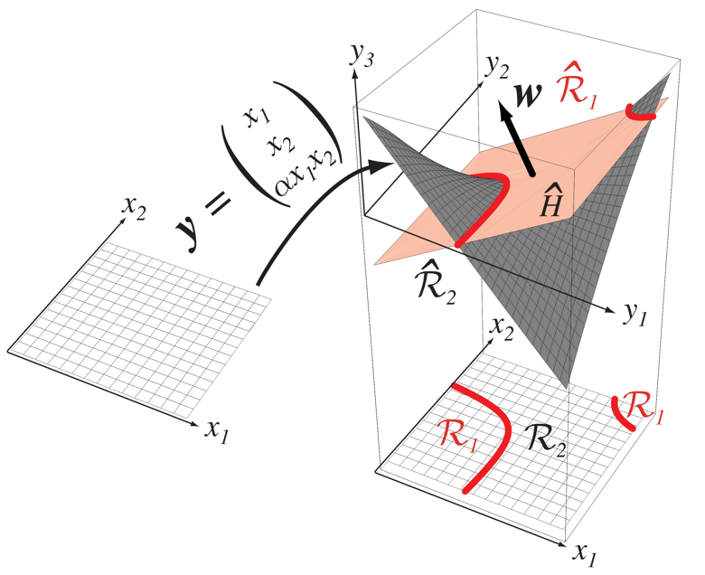
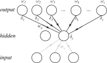

Neural Networks
Machine Learning for Biomedical Data
Scott Doyle / scottdoy@buffalo.edu
Recap
Recap: Linear Discriminants
We can classify using a set of $c$ discriminants:
$ g_{i}(\mathbf{x}) = \mathbf{w}_{i}^{T}\mathbf{x}+w_{i0}, i\in\{1,2,\ldots,c\} $
Our classification rule is thus:
$ g_{i}(\mathbf{x}) > g_{j}(\mathbf{x}) \textrm{ for all } j\neq i $
This is a linear machine.
Recap: Individual Discriminant Function

Recap: Combination of Discriminant Functions

Recap: Linear Discriminant Functions
We can continue to add terms to represent higher-order (polynomial) discriminant functions, until we have a generalized function:
$ g(\mathbf{x})=\sum_{i=1}^{d}a_{i}y_{i}(\mathbf{x}) $
$ g(\mathbf{x})=\mathbf{a}^{T}\mathbf{y} $
Here, $\mathbf{a}$ is a $\hat{d}$-dimensional weight vector and $y_{i}(\mathbf{x})$ are $\hat{d}$ functions of $\mathbf{x}$.
By choosing $y_{i}(\mathbf{x})$ carefully, we can approximate a discriminant function that is not linear in $\mathbf{x}$ but is linear in $\mathbf{y}$.
Recap: Mapping to High-Dimensional Space


Recap: Motivation for Mapping Functions
In theory, ANY function – no matter how complex – can be modeled in a high enough space.
How do we calculate these weight vector $\mathbf{a}$?
Gradient descent! Set up the sum-of-squared-error criterion function, and take the gradient with respect to $\mathbf{a}$.
$ J_{s}(\mathbf{a}) = |\mathbf{Ya}-\mathbf{b}|^{2} $
$ \nabla J_{s} = 2\mathbf{Y}^{T}(\mathbf{Ya}-\mathbf{b}) $
Recap: Least-Mean-Squared Rule
If we consider updating the estimate of $\mathbf{a}$ using a sequence of observed values, we have:
\begin{align} \mathbf{a}(1) &= \textrm{arbitrary} \\ \mathbf{a}(k+1) &=\mathbf{a}(k)+\eta(k)(b(k) - \mathbf{a}^{T}(k)\mathbf{y}^{k})\mathbf{y}^{k} \end{align}
$\eta(k)$ is the learning rate at iteration $k$, and $b(k)$ is the bias vector.
The LMS rule is useful because it doesn’t try to maximize training performance, but instead minimizes overall deviation from the hyperplane.
This typically yields a more generalizable model.
Recap: LMS Algorithm
\begin{algorithm}[H]\footnotesize\emph{begin initialize $\mathbf{a}, \mathbf{b}, \textrm{ threshold } \theta, \eta(\cdot), k\leftarrow 0$}; \Repeat{$|\eta(k)(b_{k}-\mathbf{a}^{t}\mathbf{y}^{k})\mathbf{y}^{k}|<\theta$}{ $k\leftarrow k+1$; $\mathbf{a}\leftarrow\mathbf{a}+\eta(k)(b_{k}-\mathbf{a}^{t}\mathbf{y}^{k})\mathbf{y}^{k}$; } \KwRet{$\mathbf{a}$} \end{algorithm}
Recap: LMS Example Results
Neural Network Architecture
Introduction to Neural Nets
Neural networks are an extension of linear discriminants.
Neural networks are made up of “neurons”, or computational units, originally called perceptrons when they were developed back in the 50s.
A perceptron simply takes several inputs and computes a single output. Think of a neuron receiving various inputs (action potentials, chemical gradients, etc.) and then calculating an “output”.
The main difference with discriminants is that while discriminants output a real number, perceptrons outputs are binary, mimicking the biological action potential they’re based on.
Perceptron Illustration


Expressive Power of Perceptrons
Extending Neural Nets
This setup has the same descriptive power as a linear discriminant. To extend its representational capacity, we can add additional layers between the input and the final output.
These are called “hidden” layers, since they are hidden to the outside world – they transform the inputs into the outputs, but the actual “content” of the nodes is not readily apparent.
Three-layer Schematic

Expressive Power: Approximation of Any Function
There is a proof that for any continuous function $g(\mathbf{x})$ defined on the unit hypercube $I^{n}$, where $I=[0,1]$ and $n\geq 2$, we can write:
$ g(\mathbf{x}) = \sum_{j=1}^{2n+1}\Xi_{j}\left(\sum_{i=1}^{d}\psi_{ij}(x_{i})\right) $
In neural network terms, the $2n+1$ hidden units take a sum of $d$ nonlinear functions, one for each feature $x_{i}$, as input.
Hidden units emit a nonlinear function $\Xi$ of the total input.
The output unit emits the sum of the hidden units’ contributions.
Another proof comes from Fourier, who showed that any function $g(\mathbf{x})$ can be represented by an infinite harmonic series of functions.
Expressive Power: Approximation of Any Function
Using Neural Networks
Net Activation
The inputs are presented to the input layer, and each hidden unit computes its scalar net activation which is denoted as $net$:
$ net_{j} = \sum_{i=0}^{d}x_{i}w_{ji}\equiv \mathbf{w}_{j}^{T}\mathbf{x} $
(Recall augmentation, where the bias term is included in the weight vector.)
The subscript $i$ indexes the input layer units (i.e. input dimensionality), $j$ is the hidden layer units, and $w_{ji}$ is the input-to-hidden layer weights at $j$.
Net Activation
Each hidden unit’s output is a nonlinear function of activation, also called (conveniently) an activation function:
$ y_{j} = f(net_{j}) $
In the past, $f(net)$ was just a sign function:
$ f(net) = \textrm{Sgn}(net)\equiv \begin{cases} 1 &\quad \textrm{if } net \geq 0 \\ -1 &\quad \textrm{if } net < 0\\ \end{cases}$
This function $f(\cdot)$ serves the same purpose as the kernel function $\phi$ for SVMs, or the mapping functions $\mathbf{y}$ in linear discriminants.
Network Output Layers
Each output node computes its activation based on input from hidden units:
$ net_{k} = \sum_{j=0}^{n_{H}}w_{kj}y_{j} = \mathbf{w}_{k}^{T}\mathbf{y} $
So now we have the output units, indexed by $k$, and the $n_{H}$ hidden units creating a similar net activation just like we had for the hidden units and the input layer.
Network Output Layers
We can have $k$ output units, with output $z_{k}$, calculated as:
$ z_{k}=f(net_{k}) $
We use the same $f(\cdot)$ for the hidden-to-output net as we did for the input-to-hidden net, although this isn’t necessary.
Choosing the Activation Function
There are many different activation functions: sigmoid, logistic, arctangent, hyperbolic tangent, rectified linear units (RELU), error function…
You can create any activation function you want, but they must have some basic properties:
- Smoothness and continuous differentiation: This helps in calculating the gradient during training, which we’ll discuss in a minute
- Nonlinearity: Nonlinear functions enable us to capture relationships between the data inputs, the same way projection works with linear discriminants
Smoothness and Continuous Differentiation
During training, the smoothness requirement allows $f(net)$ to avoid “exploding” inputs that you might get if you just keep adding stuff together.
This process is sometimes called regularization, and the activation function is sometimes called a squashing function (because it squishes extreme values to be between -1 and 1, or sometimes 0 and 1).
Activation Functions and Limits of Linearity
The activation function $f(net)$ is an anti-symmetric sigmoid; in this case, the function is nearly linear for $-1<net<+1$ and the second derivative has extrema near $net\approx\pm 2$.
Activation Functions and Limits of Linearity
The activation function $f(net)$ is an anti-symmetric sigmoid; in this case, the function is nearly linear for $-1<net<+1$ and the second derivative has extrema near $net\approx\pm 2$.
Activation Functions and Limits of Linearity

The activation function $f(net)$ is an anti-symmetric sigmoid; in this case, the function is nearly linear for $-1<net<+1$ and the second derivative has extrema near $net\approx\pm 2$.
Feedforward Operation
By combining the previous equations, we can get a general output expression:
$ g_{k}(\mathbf{x}) \equiv z_{k} = f\left(\sum_{j=1}^{n_{H}} w_{kj} f\left(\sum_{i=1}^{d}w_{ji}x_{i}+w_{j0}\right)+w_{k0}\right) $
Evaluating this expression, from inputs to outputs, is called the feedforward operation.
Example Problem: XOR
XOR Problem
XOR: Network Diagram

XOR: Network Responses

XOR: Computations
- Hidden unit 1 boundary: $1 * x_{1} + 1 * x_{2} + 0.5 = 0$
- If $x_{1}+x_{2}+0.5\geq 0$, then $y_{1}=1$, otherwise $y_{1}=-1$
- Hidden unit 2 boundary: $1 * x_{1} + 1 * x_{2} - 1.5 = 0$
- Output unit boundary: $0.7 * y_{1} - 0.4 * y_{2} - 1 = 0$
- $z_{1} = +1$ if $y_{1} = +1$ and $y_{2} = +1$, and $-1$ otherwise.
Neural Network Training
Training the Weights
Training Basics: Backpropagation
How do we set the weights so that we can get our desired output?
Backpropagation is the most-used method.
In the two-layer (discriminant function) case, we adjusted the weights based on the output error – but how do we do this when there’s an input-to-hidden layer “error” we need to figure out?
This is the credit assignment problem – the hidden layer is by definition an “intermediate” step between the input and the output, so how do we know if it’s doing poorly?
Backpropagation allows us to come up with an effective error for the hidden layer by computing gradients through multiple applications of the chain rule.
Backpropagation Overview
Feedforward is when you stuff inputs into the network and it gives you an output.
Training is when you tune the network to bring the outputs closer to the target values.
The approach to learning is as follows:
- Present training data to the network and calculate the feedforward op
- Compare outputs to the targets and figure out the errors
- Adjust the network weights to reduce the measure of error
- Optimal weights are achieved when the output error is minimized
Example Three-Layer Network
Training Error
Training error is calculated differently depending on our problem – Are we seeking a classification label, or an output signal?
The error criterion we use is typically called a loss function, where higher loss means we’re “farther away” from the correct answer:
$ J(\mathbf{w})=\frac{1}{2}\sum_{k=1}^{c}(t_{k}-z_{k})^{2}=\frac{1}{2}|\mathbf{t}-\mathbf{z}|^{2} $
Gradient Descent
Backpropagation, like most of our learning algorithms, is based on gradient descent:
$ \Delta\mathbf{w}=-\eta\frac{\partial J}{\partial\mathbf{w}} \Delta w_{kj}=-\eta\frac{\partial J}{\partial w_{kj}} $
Again, $\eta$ is the learning rate that indicates the size of the change in the weights, and our update rule is: $\mathbf{w}(m+1)=\mathbf{w}(m)+\Delta\mathbf{w}(m)$.
Weight Update Derivatives
We can calculate $\delta_{k}$ by differentiating $J(\mathbf{w})$ with respect to $net_{k}$:
$ \delta_{k} = -\frac{\partial J}{\partial net_{k}} = -\frac{\partial J}{\partial z_{k}} \frac{\partial z_{k}}{\partial net_{k}} = (t_{k}-z_{k})f^{\prime}(net_{k}) $
Finally, we can calculate the last derivative as:
$ \frac{\partial net_{k}}{\partial w_{kj}} = y_{j} $
Putting this all together, we can calculate the learning rule for the hidden-to-output weights:
$ \Delta w_{kj} = \eta\delta_{k}y_{j} = \eta(t_{k}-z_{k})f^{\prime}(net_{k})y_{j} $
If the output is linear ($f(net_{k}) = net_{k}$ and $f^{\prime}(net_{k})=1$), then this is just the LMS rule.
Backpropagation Illustration

Backpropagation is named because the error at the output layer is propagated back to the hidden layer, where it is used to perform training of the input-to-hidden layer weights.
Practical Concerns
Weights are usually initialized randomly (as with most gradient descent methods).
We want to do this to ensure fast and uniform learning, i.e. the weights should all reach equilibrium at about the same time.
To do this, we set the weights according to the distribution $-\tilde{w} < w < +\tilde{w}$, for some value of $\tilde{w}$.
We need to set $\tilde{w}$ such that it yields a net activation at the hidden units in the range of $-1 < net_{j} < +1$.
Extensions to General Networks
Our case was very simple, but it can easily be extended to other networks.
Backpropagation can be generalized to feed-forward networks in which:
- Input units include a bias unit
- Input units are connected directly to output as well as hidden units
- There are more than three layers
- There are different nonlinearities $f(\cdot)$ for different layers
- Each unit has its own nonlinearity
- Each unit has a different learning rate
Some of these situations are more complex than others, but the training protocols and basic ideas remain the same.
Next Class
Continue with Neural Nets
So adding a hidden layer allows us to model complex input spaces.
What if we add two hidden layers? Or three? Or 50?
Chain-rule still works, so backpropagation should still give us gradients to calculate…
Continue with Neural Nets
In general, deep networks refer to neural networks with a large number of hidden layers.
In the next class we’ll start covering deep learning, which are some of the recent developments in machine learning and AI.
We’ll also start discussing a special type of network: convolutional neural networks, which are a type of deep network specific for image analysis.